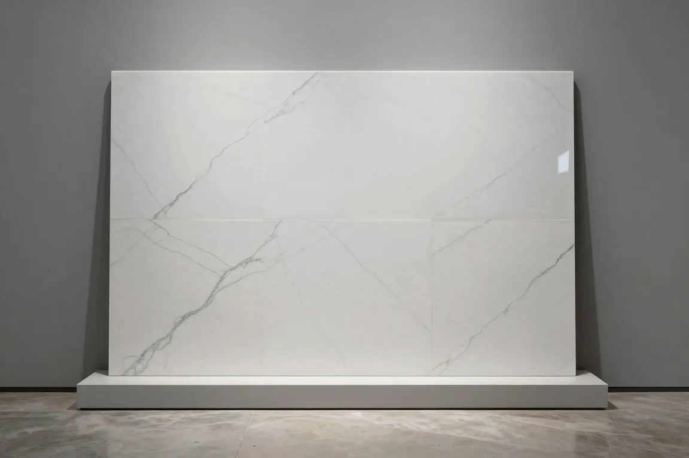

Svært harde, tette fliser som en fabrikk presser i størrelser på 60 ganger 60 cm og over, opptil plater på 3 m. En digital skriver gir flaten utseende av stein, tre eller betong. Fine fuger får veggen eller gulvet til å leses som én hud.

Kjerneidé
Ett stort, tett, tynt keramisk ark gir en sømløs flate som holder utseendet til et annet materiale.
Designprinsipper
Press flisen til 60 ganger 60 cm eller mer, og opptil 120 ganger 280 cm eller 160 ganger 320 cm for en plate.
Brenn godset til under 0,5 prosent vannopptak, slik at det tåler frost, flekker og slitasje.
Hold flisen tynn, 6 til 12 mm, til en vegg, og 20 mm til et utegulv.
Skriv ut flaten med blekkskriver, med et motiv fra stein, tre, betong eller metall, og varier bildet over mange plater.
Rektifiser kantene og sett fugene til 1 til 2 mm, slik at flaten leses som ett ark.
Velg en matt eller satinflate på 5 til 30 GU, og legg til en tekstur som følger trykket.
Bruk platen til gulv, vegger, benkeplater og fasader i ett materiale, uten skifte i hjørnet.
Planlegg kutt og leggemønster på forhånd, fordi en plate har høy bruddkostnad.
Antimønstre
En liten flis med bred fuge og en håndlaget kant
En blank speilaktig glasur som viser hvert fotspor